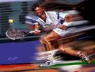
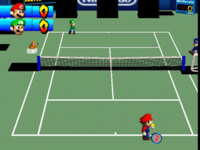

Tenis
 De: La Frikipedia, la enciclopedia extremadamente seria.
De: La Frikipedia, la enciclopedia extremadamente seria.
 Este tenista intenta correr a la velocidad de la oscuridad
Tenis, o también llamado ゆ(tenis en chino y en brasileño) un deporte donde gritan más que una ramera en un feriado.
En este deporte, tienen que fijarse bien en que la pelota caiga dentro de un cuadrado que está sobre una superficie de caca, donde están los jugadores en pose de: aquí entran sólo bolas (lo cual ¿explica el sentido del juego?)
Características
- Los árbitros están sentados en una silla de 5 metros, que no se cómo coño se suben ni cómo se bajan, de la cual, gritan palabras raras que nadie entiende como: "valotash". La mayoría de los árbitros son irakinobrasileños.
- Los jugadores se mueven de un lado a otro bajo 40 grados en piso de piedra y tratando de ver una pelota de 1x1 cm.
 Mario de picnic haciendo gestos.
- Se gana un punto por cada gemido que se grita y gana el que llega vivo al fin del partido.
- Usan raquetas en forma de óvalo con una red de hilos de papel para hacer rebotar las pelotas, tratar de que llegen al otro cuadrado y que el otro "boludo" no la devuelva.
- En las tribunas hay tantos drogados que al final del partido, después de estar dos horas bajo 40 grados mirando ir y venir una pelota, se van a sus casas con ganas de matar a palos al creador del juego.
- La cancha está dividida por una red de papel igual que la raqueta y solo sirve para que la pelota no pase dos centímetros del suelo y para joderle la vida a los jugadores.
- Dicha red, esta dividida en cuadrados para divertir a los jugadores y para darles a los árbitros una razón para gritar.
- El juego empieza con un grito, el que pega el grito más fuerte, empieza gritando primero.
El mejor jugador es Djokovic, nacido en la U.R.R.S., que ultimamente se canea a todos. El Aspañol Rafa Nada es el que mejor grita, y otro de los buenos es Rogelio Federerico, que es como los bollos, suizo.
La superficie preferida de Rafa es la caca batida y la de Rogelio es el césped sin caca.
En mujeres las que más destacan son las negras Williams (que en realidad son hombres), Justina Enana-Ardiente y la María Warrapova, que es la más popular por sus gritos y las fantasías sexuales que provoca.
Como jugar
Para juegar al tenis, tienes que agarrar un palo (No vale un falo) y hacer que alguien te lanze una mierda de perro seca, tu en un acto reflejo, y con reflejos de la velocidad de la oscuridad, tienes que mover el palo a tal velocidad, que haga un aeroescudo ventoso que logre crear una barrera de viento que repela la mierda de perro seca y la lanze disparada hacia otro lado.
Hay gente que juega con pelotas verdes...
Lugares de juego
- Tu habitacion
- El cuarto de tu hermanit@
- La biblioteca
- En Roland Guarrós
- En el altar
- En la piscina
- en la casa de mi puta madre
- en un acelerador de particulas
Autor(es):
- Krusher
- Doctor grijander
- Perdedor458
- Frikiman
- Aque
- Cachulo
- Azulejos
- Frikih
- Yankook
- Chopinex
Frikipedia 2005-2016, Licencia
GFDL 1.2 - Extraído por FrikiLeaks